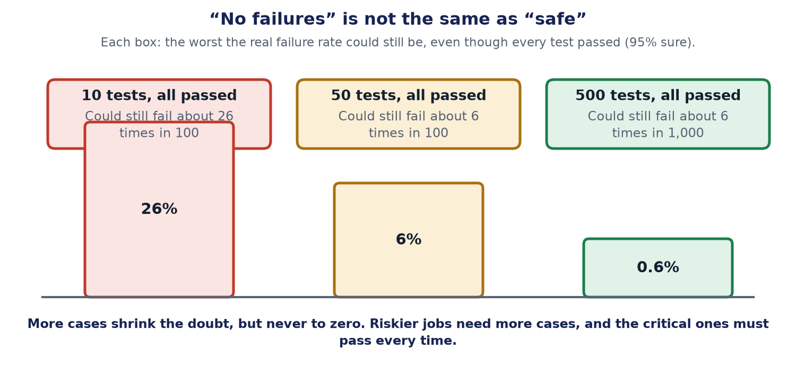

50 tests passed. Is it safe? Why "no failures" is not proof
First published on keshavaai.in. Repository with the tests: https://github.com/kapilgupta86/agent-controls-harness

In one sentence: Passing every test does not prove an AI is safe. It only tells you how small the problem can still be, so set the pass rules before you test, and let one failed critical test stop the release.
Think of a bag of marbles
A bag holds red and blue marbles. You pull out 10 marbles, and all 10 are blue. Does that mean there are no red ones? No. There could still be quite a few red ones hiding at the bottom. Now pull out 500 marbles, and all 500 are blue. Now you can be much more sure, but still not completely.
Testing an AI is the same. Each test is one marble. "All tests passed" is a good sign. It is not a promise.

How much does "no failures" really tell you?
There is a simple rule, called the rule of three. If a helper passed n tests in a row, then the real failure rate is probably below about 3 divided by n. "Probably" here means 95 times out of 100.
- 10. The real failure rate could still be as high as: about 26 in 100.
- 50. The real failure rate could still be as high as: about 6 in 100.
- 100. The real failure rate could still be as high as: about 3 in 100.
- 500. The real failure rate could still be as high as: about 6 in 1,000.
So 50 perfect tests do not mean "safe". They mean "probably fewer than 6 mistakes in every 100". For writing a friendly reply, that may be fine. For sending a payment, it is not.
The release gate: a rule that decides, not a mood
A release gate is a rule, written in code, that says whether a change may go live. It runs on every change, like a security guard at a door. It has two kinds of rule:
- A blocker. Some tests are critical. For example: "a yes for one payment must never work for a different payment". If even one critical test fails, the change is stopped. Good marks elsewhere cannot hide it.
- A pass mark. For everyday tests you choose a mark, such as 9 out of 10. You must choose it before you test. If you choose it afterwards, you will be tempted to move the line to fit the result.
This is why a helper that gets 49 out of 50 tests right can still be stopped. If the one it missed was critical, the answer is no.
Three habits that make the gate honest
- Check what happened, not what was said. If the AI says "refund sent", look at the payment record. The words may be wrong even when they sound sure.
- Run the cheap tests first. Quick, free checks go first. The slow, costly test goes last. Stop at the first critical failure, because there is no point paying for the slow tests after a fast one said no.
- Test the grader too. Often another AI marks the answers. Before you trust it, let it mark 50 answers that people already marked. If it agrees with the people most of the time, use it. Check again whenever you change the grader.
What to do
- Write down which tests are critical. Keep that list short and serious.
- Choose the pass mark before you run the tests.
- Say "no failures in 50 tests", never "it is safe".
- Use more tests for riskier jobs.
- Add every real mistake as a new test.
The limits of this advice
- The rule of three assumes the tests are independent and look like real use. Tests that are too similar to each other, or too easy, make the number look better than it is.
- It tells you about the kinds of cases you tested. It says nothing about kinds you never thought of.
- A test that always passes is worth nothing. Check that your tests can fail: break something on purpose and see the gate say no.
- The numbers here are examples. Your own risk decides how low the failure rate must be.
Words explained
- Critical test: a test for something that must never go wrong. One failure stops the release.
- Release gate: a rule that decides whether a change may go live.
- Pass mark: the score needed to pass the everyday tests, chosen before testing.
- Rule of three: if n tests all passed, the real failure rate is probably below about 3 divided by n.
- Grader (judge): an AI or a program that marks an answer right or wrong.
- Regression: something that used to work and now does not.
For engineers
This section has the exact details. Everything above is the simple version of it.
- The bound. With zero failures in n independent trials, the one-sided 95% upper confidence limit on the failure rate p solves (1 - p)^n = 0.05, so p = 1 - 0.05^(1/n), which is close to 3/n. For n = 10, 50, 100 and 500 that gives 25.9%, 5.8%, 3.0% and 0.6%. Pick the confidence level and the allowed failure rate for each risk tier, and solve for n.
- Gate logic. A critical failure blocks regardless of the mean. The pass threshold is fixed in the repository before the run. Report scores by category and risk tag, and gate on the worst category, not the average.
- Outcome over transcript. Grade the end state (the record changed, the payment exists), and use the transcript to explain a failure, not to excuse it. Anthropic's write-up on agent evals draws the same line and separates capability evals from regression evals.
- Cost order. Deterministic checks on every change (approval binding, budget stops, schema), targeted model-based checks next, the full end-to-end run with a judge once per release. Fail fast on the first critical failure.
- Judge calibration. Compare judge scores with human labels on a sample of about 50, track agreement over time, rotate answer order, and score against a rubric. Re-run the comparison after any judge-model change.
- Test the tests. Mutation-check the gate: introduce a known fault and confirm the gate fails. The example harness for this series does exactly that: https://github.com/kapilgupta86/agent-controls-harness
- Frameworks. NIST AI RMF 1.0 (voluntary, Jan 2023) and NIST AI 600-1 (Jul 2024) are the usual references for risk-based testing. They do not prescribe sample sizes.
- Where it fits. The book extends Chapter 12 with this material, and Appendices D and E carry the test-case template and sixteen edge cases. Autonomy levels are in the article on earned autonomy.
Read it on the website, with the interactive version and sources: https://keshavaai.in/journal/zero-failures-not-proof